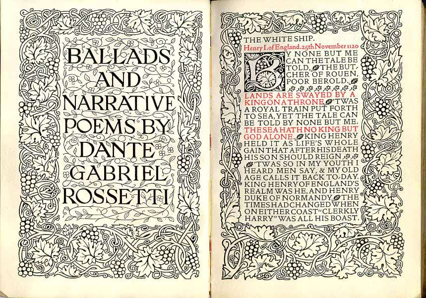

Szelest słów
Pisząc o dylematach dzisiejszych autorów i twórców (nie sprowadzają się one wyłącznie do pytania: „używać macintosha czy nie”), zastanawiałem się nad kwestią bardziej ogólnej natury: czy używane przez nas narzędzia, otaczająca je aura i symbolika, mają wpływ na jakość i efekt naszej pracy?
Czy wiersz napisany wykwintnym piórem Waterman czy Montblanc będzie piękniejszy od zanotowanego zwykłym długopisem (na dodatek na kawiarnianej serwetce)? Czy esej pisany na macintoshu będzie bardziej noblowski niż wystukany na „zwyczajnym”, szarym komputerze?
Wydaje się, że podobne rozterki nurtują również drugą stronę twórczego dialogu: odbiorcę, czytelnika, widza. Czy używane przez nas narzędzia, otaczająca je aura i symbolika, mają wpływ na sposób, w jaki odbieramy efekt twórczej pracy: tekst, obraz, dzieło sztuki.
Czy uśmiech Mony Lisy nie urzekałby mocniej, gdyby od widza nie oddzielała jej kuloodporna szyba? Czy czytanie książek na nowoczesnych urządzeniach sprawia podobną satysfakcję co lektura tradycyjnych publikacji, z ich szelestem przewracanych kartek i zapachem drukarskiej farby?
Siłę oddziaływania konkretnego tekstu czy obrazu potrafi wzmocnić otaczająca je aura: czcionka, którą książkę wydrukowano, nastrój sali, w której wystawiono porywające malowidło. Podobnie rzecz się ma z prezentacją treści w Internecie — inaczej odbieramy wpis na zaprojektowanej przez autora stronie, zgodnie z jego zamysłem i upodobaniem, a inaczej jego karykaturę, ogołoconą przez czytnik rss czy serwisy typu Instapaper i Readability, które de facto eliminują twórcę (grafika, projektanta) jako element zbędny na styku dzieło — odbiorca.
Nie potrafię zaakceptować opinii, jakoby treść broniła się sama — niezbędnym elementem właściwego odbioru jest także jej wizualna prezentacja. Myśl nie istnieje przecież bez wyrażających ją słów, w jakimkolwiek myślimy języku. Dlatego nie niweczmy różnorodności, zdając się na bezduszne automaty, kastrujące słowa z ich wizualnego wyrazu. Czy wyobrażacie sobie lekturę doskonałych pod względem wizualnym i typograficznym witryn w czytniku rss? Słowo, choćby i najdonioślejsze, zamiera, jeśli je rzucić w próżnię.